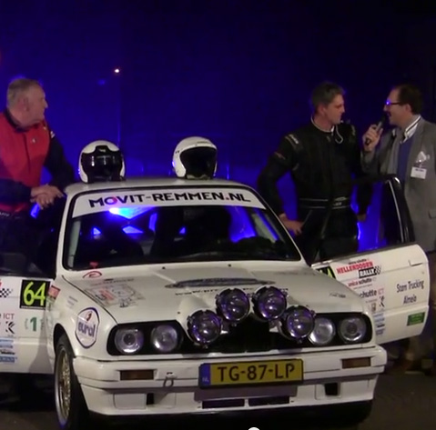

donderdag, 04 december 2014
UNIEKE 360-graden onboard beelden vanuit de PrestonPalace-Rallyteam BMW 325i E30
Tijdens de Conrad Euregio Rally in Hengelo zijn wij, in samenwerking met onze sponsor
Recreate, met een speciaal project bezig geweest: 360-graden beelden vanuit een rallyauto.
Recreate nam, na de Unica-Schutte Hellendoornrally, contact met ons op of het ons wat leek om deze vorm van on-board beelden uit te proberen. Daarop hebben wij natuurlijk ja gezegd!!
Recreate heeft daarna in onze werkplaats de camera gemonteerd, alles afgesteld en een proefshot gemaakt. Daarna hebben de mannen van
Recreate zich teruggetrokken en alle puntjes op de i gezet om dit project tot slagen te brengen.
Tijdens de zondagmorgen, net voor aanvang van de Conrad Euregio Rally, werd de camera opnieuw in de rallyauto geplaatst om tijdens de rally opnames te maken. Dit werd op de eerste klassementsproef zeer succesvol afgerond. Ze hebben de beelden daarop gemonteerd en zijn deze vervolgens gaan uploaden. Dit ging niet helemaal zonder slag of stoot. Er komt namelijk best veel bij kijken om er voor te zorgen dat onder elke hoek een perfect beeld te zien is.
Dit is nu goed gelukt en we nodigen u hierbij uit om als 3e rallyrijder plaats te nemen op onze “virtuele achterbank”.
Met de 360-graden beelden kunt u rondom de actie in de rallyauto meemaken.
Dit betekent dat elk gewenst beeld, uit welke hoek dan ook, bekeken kan worden.
Bijvoorbeeld:
u kunt recht vooruit kijken door de voorruit, maar gaat u met de muis/smartphone naar links, dan kijkt u letterlijk naar links. Zo kunt u ook naar rechts en naar achteren kijken.
Dit is uniek, want dit is nog niet eerder in een rallyauto gedaan.
Wij wensen u veel plezier met deze unieke beleving en danken bij deze de mannen van
Recreate voor de geboden mogelijkheid.
Voor verdere informatie:
http://www.recreate.nl Tevens bedanken we onze hoofdsponsor Preston Palace, die het mogelijk heeft gemaakt dat wij mee hebben kunnen doen aan de Conrad Euregio Rally.
De 360graden opname is te vinden op onze website vanaf een desktop computer, het is helaas niet mogelijk om de 360-graden video af te laten spelen op mobiele devices. De video is te vinden onder de volgende link:
http://prestonpalace-rallyteam.nl/360.html
woensdag, 18 juni 2014
PB Rally van Putten (PrestonPalace Rallyteam)
Tijdens de, op 14 en 15 maart, verreden Tank S Rally hebben een aantal leden van de MCRI (Marshall Crew Rally International) een spontane actie in het leven geroepen, om er voor te zorgen dat het PrestonPalace Rallyteam aan de start zou staan van de eerste Rally van Putten op 10 mei jl. Doordat zij een substantieel deel van het inschrijfgeld bij elkaar hadden verzameld, was het mogelijk de BMW in Putten de sporen te geven.
Nadat het team de week ervoor al de Rally Sulingerland had gereden, had Egbert de keuze gemaakt om niet in de hotseat plaats te nemen, maar deze over te dragen aan Anita Ruttenberg.
Het technisch team had de BMW, in de paar dagen tussen Sulingen en Putten, van een nieuwe remkrachtverdeler voorzien en de wagen verder weer helemaal fris op de wielen gekregen. Men ging dan ook vol vertrouwen op pad.
De weergoden waren de 72 deelnemende equipes niet gunstig gezind, getuige de overvloedige regenval tijdens de wedstrijd. Enkele delen onverhard waren veranderd in modderpaden en zo glad geworden dat het, voor vele deelnemers, bijna onmogelijk was de pk's op een gunstige wijze over te brengen op het wegdek. Gevolg: veel dwarse acties en veel plezier bij het publiek!!
De BMW van het PrestonPalace Rallyteam had al een tijdje te kampen met kachelproblemen en dat kwam met de vochtige omstandigheden heel slecht uit. Tijdens KP1 besloegen de ruiten van de auto dermate, dat Anita de pacenotes op gevoel moest lezen. Ondanks deze handicap wisten ze een tijd te realiseren die maar 6 seconden langzamer was dan de Willowstreet-equipe van Gerwin Voortman, het team dat ook in een BMW 325i in de Challenge meerijdt en geen dergelijke problemen kende. Ook tijdens de volgende klassementsproeven was het vochtprobleem een grote tegenstander waardoor Dirk en Anita de proeven, grotendeels met half geopende ramen, moesten afleggen.
Naarmate de dag vorderde werd de samenwerking in de auto steeds beter en dat bleek op KP3. Na driekwart van de proef hadden ze een voorsprong van bijna 20 seconden t.o.v. de vorige doorkomst op dat punt. Een overmachtsituatie bracht hier echter verandering in: het voor hun gestarte team van Niels van de Warrenburg en Alex Eisenberg (in hun snelle Opel Corsa super 1600) waren in een erg slecht stuk onverhard vast komen te zitten en blokkeerden de weg volledig voor de achterop komende deelnemers, waaronder dus ook Dirk en Anita. De klassementsproef werd geneutraliseerd en het PrestonPalace Rallyteam moest het doen met een normtijd, die overigens wel een heel stuk sneller was dan bij de eerste doorkomst.
Nadat de proeven 1/3 en 2/4 verreden waren, werden deze proeven aan elkaar "geknoopt" en ontstond er een klassementsproef met een lengte van bijna 35 km., eentje die in Nederland nog niet eerder was voorgekomen. Het was wel spijtig dat deze proef, door een crash van een deelnemer, weer geneutraliseerd werd en Dirk en Anita weer met een normtijd geconfronteerd werden.
Maar ondanks de slechte weersomstandigheden en de overmachtsituaties hebben Dirk en Anita de finish zonder schades of grote problemen weten te behalen. Met heel veel plezier hebben ze dan ook de rally kunnen afsluiten als 35ste van de 72 gestarte teams.
Als conclusie kunnen we stellen, dat de BMW steeds meer een maatpak begint te worden en de prestaties een stijgende lijn vertonen.
Tot slot willen we alle teamleden en de sponsoren bedanken voor hun bijdrage. Een speciaal woord van dank gaat uit naar de officials en alle andere personen, die ons financieel hebben ondersteund en het mogelijk hebben gemaakt om mee te doen aan deze eerste editie van de Rally van Putten.
Het PrestonPalace Rallyteam zal op 4 en 5 juli deelnemen aan GTC Rally in- en om Etten Leur.
woensdag, 17 september 2014
PrestonPalace Rallyteam met positief gevoel naar Hellendoornrally
Het PrestonPalace Rallyteam gaat met een positief gevoel naar de Hellendoornrally om daar te trachten een podiumplek te veroveren.
Aan het technisch team zal het niet liggen. Zij hebben de afgelopen 4 maanden keihard gewerkt om de BMW 325i weer netjes op de wielen te krijgen. Nadat tijdens de Sulingerland Rally en de Rally van Putten problemen waren met een slangenbreuk rondom het koelsysteem, is er voor gekozen alle slangen te gaan vervangen voor siliconen exemplaren. Tevens is de cilinderkop gevlakt en zijn de kleppen gereinigd en opnieuw afgesteld. Uiteraard hebben bovenstaande acties gezorgd voor een financiële aderlating en kwam het heel even op losse schroeven te staan of het team zich wel kon meedoen in Hellendoorn. Er kwam echter uit onverwachte hoek hulp van enkele nieuwe sponsoren/donateurs, die samen een substantieel deel van het inschrijfgeld betaalden. Het moge duidelijk zijn, dat wij deze bedrijven/personen zeer dankbaar zijn!! Uiteraard zijn wij onze andere sponsoren ook dank verschuldigd!!
Het PrestonPalace Rallyteam neemt onder startnummer 62 deel aan de rally in de BMW 325i Challenge. Dirk en Egbert zullen vrijdag om 20.03 uur over het startpodium rollen bij Hotel Restaurant De Kroon in de Dorpsstraat in Hellendoorn en beginnen aan de (altijd) lastige avondproeven. De eerste klassementsproef die de mannen voor de kiezen krijgen is Luttenberg (ruim 12 km), een oude bekende die al jaren deel uitmaakt van de Hellendoornrally. Vervolgens staat er een verrassing te wachten in de vorm van KP Ypelo (11 km), een klassementsproef die ook al enkele decennia deel uitmaakt van de rally maar nog niet eerder op de vrijdagavond is verreden. Als laatste is KP Notter (14 km) aan de beurt, om vervolgens richting de service te gaan op het bedrijventerrein 't Lochter in Nijverdal. Na een service van 30 minuten zullen dezelfde proeven nog een keer gereden moeten worden.
Op zaterdag staan er nog negen klassementsproeven op het programma waarvan de proef Hellendoorn, met een lengte van ruim 23 kilometer, de koninginnenrit is van deze 33e keer gereden zal moeten worden. De organisatie heeft klassementsproef Daarle ingewisseld voor KP Ligtenberg nabij Rijssen. Deze proef kenmerkt zich door de grote stukken onverhard (gravel) en zal twee keer gereden moeten worden, evenals de laatste klassementsproef Beuseberg (Holten).
Als de techniek het team niet in de steek laat zullen Dirk en Egbert zaterdag, om ongeveer 21.00 uur, finishen bij de Kroon.
Een leuke bijkomstigheid is, dat het promotieteam van Preston Palace uit Almelo op zaterdag de gehele dag aanwezig zal zijn op het serviceterrein om o.a. flyers uit te delen. Zij zullen geflankeerd worden door de mascottes Preston en Alice die gekozen zijn tot Kids Vakantiemascotte van het jaar 2014 en op de vakantiebeurs in Utrecht daarvoor een award in ontvangst mochten nemen.
vrijdag, 08 november 2013
Presentatie van de BMW325i!

Woensdag 16 oktober was het dan zover; de spectaculaire presentatie van de BMW325i! Alle genodigden, waaronder sponsoren, belangstellenden, vrienden en pers, kwamen binnen druppelen vanaf 19.00 uur in de prachtige ambiance van Preston Palace. Na een hartelijk ontvangst van het PrestonPalace Rallyteam en medewerkers van Preston Palace ging het woord naar Rene Coupee van Gentle Catering. Na overhandiging van een canvas met daarop een foto van de BMW325i aan Carlo Slag (directeur Preston Palace) werden alle genodigden vriendelijk verzocht naar buiten te lopen voor de onthulling van de BMW325i! Na een spectaculaire lasershow verzorgd door de magicus van Preston Palace; Peter van Rhein, reden Dirk de Boer en Egbert Kamp richting de genodigden om de auto te presenteren. De genodigden waren super enthousiast na de spectaculaire show! Onder het genot van een hapje en een drankje hebben menigeen na de show genetwerkt en geproost op de succesvolle maar zeker spectaculaire presentatie van het PrestonPalace Rallyteam!
Bekijk de film van de presentatie.